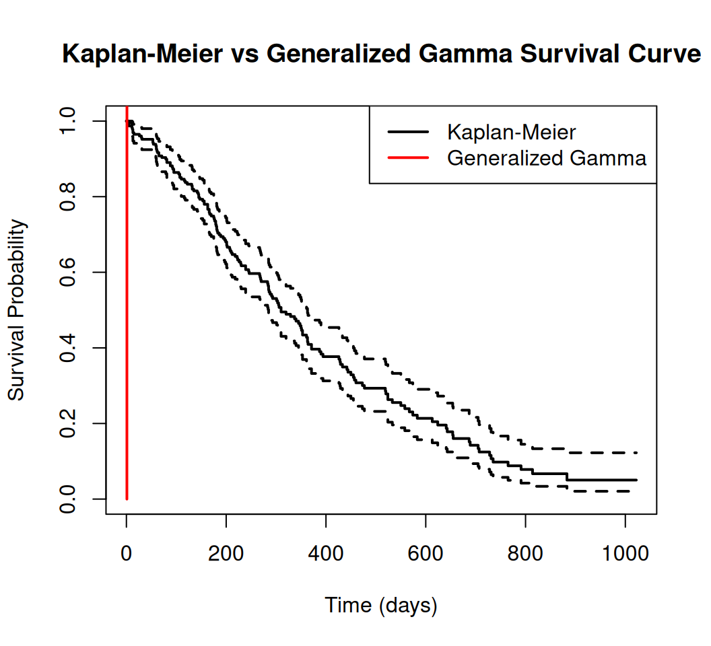
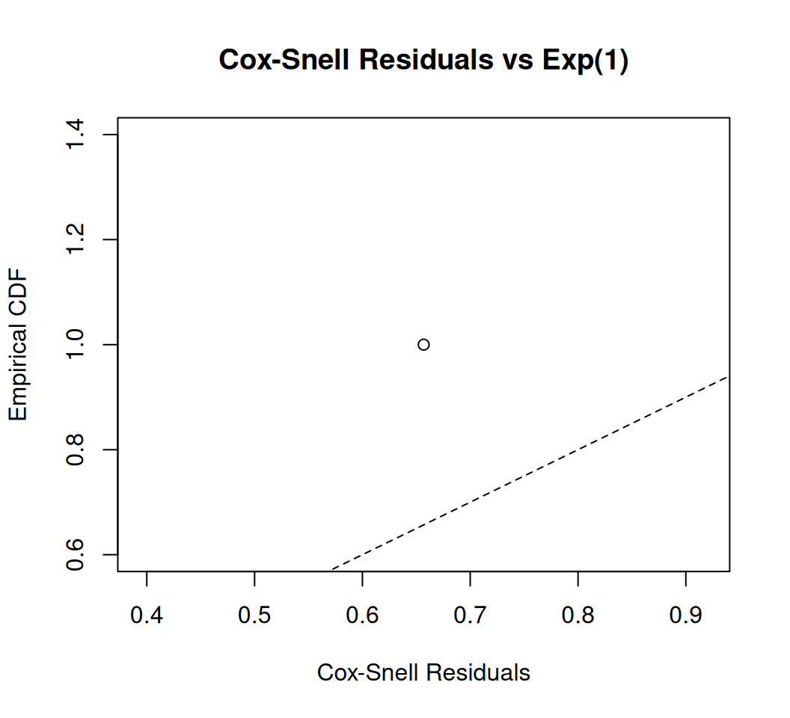
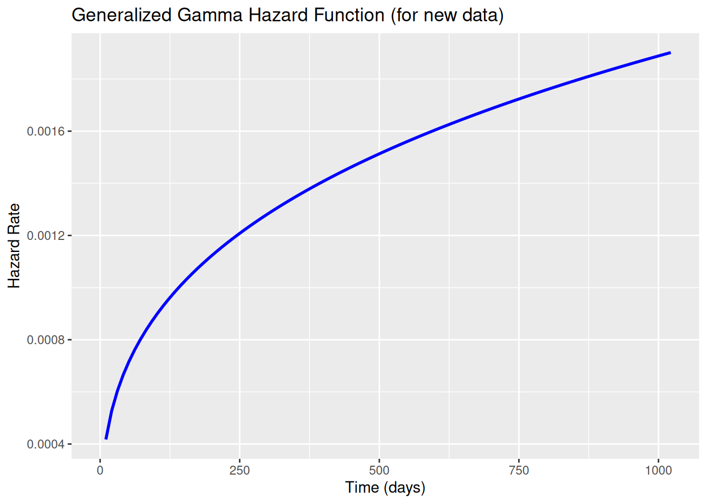

Generalized Gamma Survival Model is a flexible parametric model that encompasses several common survival distributions as special cases. This tutorial provides an overview of the generalized gamma model, its properties, and how to implement it in R using the flexsurv package. We will use the lung dataset from the survival package for demonstration.
Overview
The Generalized Gamma (GG) survival model is a highly flexible parametric model in survival analysis that generalizes several other models, including the exponential, Weibull, log-normal, and gamma distributions. It is characterized by three parameters, allowing it to model a wide range of hazard shapes (monotonic increasing, decreasing, arc-shaped, or bathtub-shaped). This makes it suitable for complex survival data where simpler models (e.g., exponential or log-normal) may not fit well. The GG model can be used in an Accelerated Failure Time (AFT) framework, where covariates scale the survival time, or in other parameterizations depending on the software.
Key Features
Flexibility: The GG model’s three parameters allow it to capture diverse hazard behaviors, including those of the exponential (\(p = q = 1\)), Weibull (\(q = 1\)), log-normal (\(q\to \infty\)), and standard gamma (\(p = q\)).
Applications: Used in medical research (e.g., survival after treatment), reliability engineering (e.g., component failure times), and economics (e.g., duration models) when hazard shapes are complex or unknown.
Assumptions: Assumes survival times \(T\) follow a generalized gamma distribution, with log-times having a flexible distribution controlled by shape parameters.
Advantages: Encompasses multiple models, reducing the need to test several distributions. Can model non-monotonic hazards (e.g., bathtub-shaped for infant mortality followed by aging).
Limitations: Computationally intensive due to three parameters. Parameter estimation can be unstable with small datasets or misspecified models. Less intuitive interpretation compared to simpler models.
The generalized gamma distribution has three parameters: \(\mu\) (location, related to the mean of log-time), \(\sigma > 0\) (scale, controlling dispersion), and \(q\) (shape, affecting hazard shape). Alternatively, it is often parameterized with a scale parameter \(\lambda = \exp(-\mu/\sigma)\) and shape parameters $p = 1/(q).
Probability Density Function (PDF): \[
f(t) = \frac{p \lambda (p t)^{pq - 1} e^{-(p t)^q}}{\Gamma(p)}, \quad t > 0, \quad \lambda, p, q > 0
\]
where \(\Gamma\) is the gamma function, \(p = 1/(\sigma q)\), and \(\lambda = \exp(-\mu/\sigma)\). The PDF is complex but reduces to simpler forms (e.g., Weibull when \(q = 1\)).
Note: Mean may be undefined for certain parameter values.
When to Use
Choose the generalized gamma model when: - Nonparametric hazard estimates (e.g., from Kaplan-Meier) show complex shapes (arc-shaped, bathtub-shaped, or non-monotonic). - You want to test multiple parametric models within one framework (e.g., exponential, Weibull, log-normal). - Flexibility is needed, but you’re willing to handle computational complexity.
Model Fit Assessment
Use AIC/BIC to compare with simpler models (e.g., Weibull, log-normal, log-logistic).
Check residuals (e.g., Cox-Snell) or compare fitted survival curves to Kaplan-Meier estimates.
Validate parameter estimates with Q-Q plots or hazard shape diagnostics.
Implementation in R
This tutorial demonstrates fitting a generalized gamma survival model using R’s flexsurv package, as the survival package’s survreg does not support the generalized gamma distribution directly. We’ll use the lung dataset from survival, consistent with your previous queries. The code includes data preparation, model fitting, predictions, plotting, and diagnostics, addressing lessons from prior errors (e.g., Invalid status value, psurvreg, lines, and plotting issues).
Install Required R Packages
Following R packages are required to run this notebook. If any of these packages are not installed, you can install them using the code below:
# Prediction for new data (60-year-old male)new_data <-data.frame(age =60-mean(lung_clean$age), sex =1)median_time <-predict(gg_model_cov, newdata = new_data, type ="survival")[[1]]print("Median survival time (days):")
# Survival probability at t=500 dayssurv_prob <-summary(gg_model_cov, newdata = new_data, type ="survival", t =500)$estprint("Survival probability at t=500 days:")
[1] "Survival probability at t=500 days:"
Code
print(surv_prob)
NULL
Code
# Plot Kaplan-Meier and generalized gamma curve (null model)km_fit <-survfit(surv_object ~1)plot(km_fit, main ="Kaplan-Meier vs Generalized Gamma Survival Curve", xlab ="Time (days)", ylab ="Survival Probability", col ="black", lwd =2)t_seq <-seq(0, max(lung_clean$time), length.out =100)surv_gg <-summary(gg_model, t = t_seq, type ="survival")$estlines(t_seq, surv_gg, col ="red", lwd =2)legend("topright", c("Kaplan-Meier", "Generalized Gamma"), col =c("black", "red"), lwd =2)

Model Diagnostics
Cox-Snell Residuals
Code
# Compute survival probabilities for each individual timesurv_list <-summary(gg_model_cov, t = lung_clean$time, type ="survival")# Extract 'est' column from each list elementsurv_probs <-sapply(surv_list, function(x) x$est[1])# Compute Cox–Snell residualsresiduals_cs <--log(surv_probs)# 2. Cox-Snell Residualsvalid <-is.finite(residuals_cs)residuals_cs <- residuals_cs[valid]# Plot Cox-Snell residualsplot(sort(residuals_cs), (1:length(residuals_cs))/length(residuals_cs),main ="Cox-Snell Residuals vs Exp(1)",xlab ="Cox-Snell Residuals", ylab ="Empirical CDF")lines(sort(residuals_cs), pexp(sort(residuals_cs)), col ="red", lwd =2)abline(0, 1, lty =2)

Model Comparison
Code
# 3. Goodness-of-Fit: Compare with Weibull and Log-Normalweibull_model_cov <-flexsurvreg(surv_object ~ age + sex, data = lung_clean, dist ="weibull")lnorm_model_cov <-flexsurvreg(surv_object ~ age + sex, data = lung_clean, dist ="lnorm")print("AIC Comparison:")
# 4. Hazard Plot (for new_data)haz_gg <-summary(gg_model_cov, newdata = new_data, type ="hazard", t = t_seq, tidy =TRUE)ggplot(haz_gg, aes(x = time, y = est)) +geom_line(col ="blue", lwd =1) +ggtitle("Generalized Gamma Hazard Function (for new data)") +xlab("Time (days)") +ylab("Hazard Rate")
Warning: Removed 1 row containing missing values or values outside the scale range
(`geom_line()`).

Summary and Conclusion
The generalized gamma survival model is a powerful and flexible tool in survival analysis, capable of modeling a wide range of hazard shapes through its three parameters. It encompasses several common distributions, making it a versatile choice when the underlying hazard function is complex or unknown. However, its complexity can lead to computational challenges and interpretability issues, especially with small datasets. Model fit should be carefully assessed using AIC/BIC, residual analysis, and visual diagnostics to ensure the chosen model adequately represents the data.